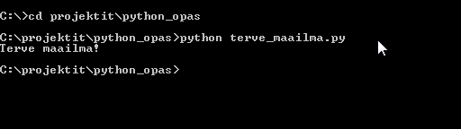

3_Komentorivi
Graafisiin käyttöliittymiin tottuneille komentorivi saattaa kuulostaa suorastaan antiikkiselta, mutta todellisuudessa komentoriviä käytetään enemmän kuin koskaan. Suurin syy tähän on kasvanut tarve automatisoida asioita erilaisten komentosarjojen avulla. Toisena syynä on halu jakaa sovellukset pienempiin helpommin hallittaviin osiin jolloin graafinen käyttöliittymä voi toimia erillisenä kokonaisuutena jonka voi tarvittaessa vaihtaa toiseen.
Monesta ohjelmasta löytyy myös sisäänrakennettu komentorivi jolla edistyneet käyttäjät voivat muokata ohjelman toiminnallisuutta, automatisoida toistuvia vaiheita ja päästä käsiksi toimintoihin jotä ei perus käyttöliittymästä välttämättä löydy.
Esimerkkejä: Blender3D, Photoshop, Pelit ja niiden modaustyökalut,
Peruskomentoja
# siirtyy aseman juureen esim. c:/
cd /
# siirtyy c-asemalle.
cd c:/
# listaa nykyisen kansion tai aseman sisältämät tiedostot ja kansiot.
dir
# luo kansion nimeltä testikansio
mkdir testikansio
# siirtyy kansioon testikansio
cd testikansio
# siirtyy takaisinpäin kansiohierarkiassa
cd ..
# poistaa kansion nimeltä testikansio
rmdir testikansio
# tyhjentää komentorivi syötteet
cls
komentorivi vinkkejä
- Automaattinen täyttö (TAB / ↹)
- Kirjoittaessasi kansiopolkua voit painaa tabia ja komentorivi yrittää päätellä ja täyttää loppuosan tiedoston tai kansion nimestä.
- Komentohistoria (Nuolet: ↑ ja ↓)
- Nuolinäppäimillä ylös ja alas voi selata komento-historiaa(Command history). Tämä helpottaa esimerkiksi python koodin ajamista sillä halutessa ajaa koodia uusiksi ei tarvitse joka kerta kirjoittaa komentosarjaa uusiksi.
- Cmd komentorivin historia säilyy yleensä siihen asti kunnes cmd-ikkunan sulkee. Muut komentorivi ohjelmat saattavat säilyttää komentohistoriaa huomattavasti pidempään.
- Välilyönnit tiedostojen ja kansioiden nimissä.
- Mikäli kansion nimessä on väli kuten Program Files voit kirjoittaa kansion nimen lainausmerkkeihin cd “Program Files”
Python kooditiedoston ajaminen komentoriviltä
- Luo kansio nimeltä python_opas jonnekin helposti löydettävään paikkaan.
- Suosittelen sijaintia c:/projektit/python_opas
- Kopio ja liitä muistoon(engl. Notepad) alla oleva koodinpätkä.
print("Terve maailma!")
- Anna tiedostolle nimi terve_maailma.py ja tallenna se python_opas kansioon.
- Avaa komentorivi cmd tai Powershell käynnistä-valikosta.
- Navigoi komentorivillä kansioon python_opas
- Suorita komentorivillä seuraava komento
python terve_maailma.py

Komentoriville pitäisi tulostua perinteinen “Hello World” suomeksi. Hello World esimerkki on yleensä ensiaskel uuden ohjelmointikielen opiskelussa. Hello World esimerkit voivat kertoa yllättävän paljon ohjelmointikielestä ja esimerkin suorittaminen on yleensä hyvä testi jonka perusteella voi päätellä, että kaikki on ainakin tähän mennessä kunnossa.